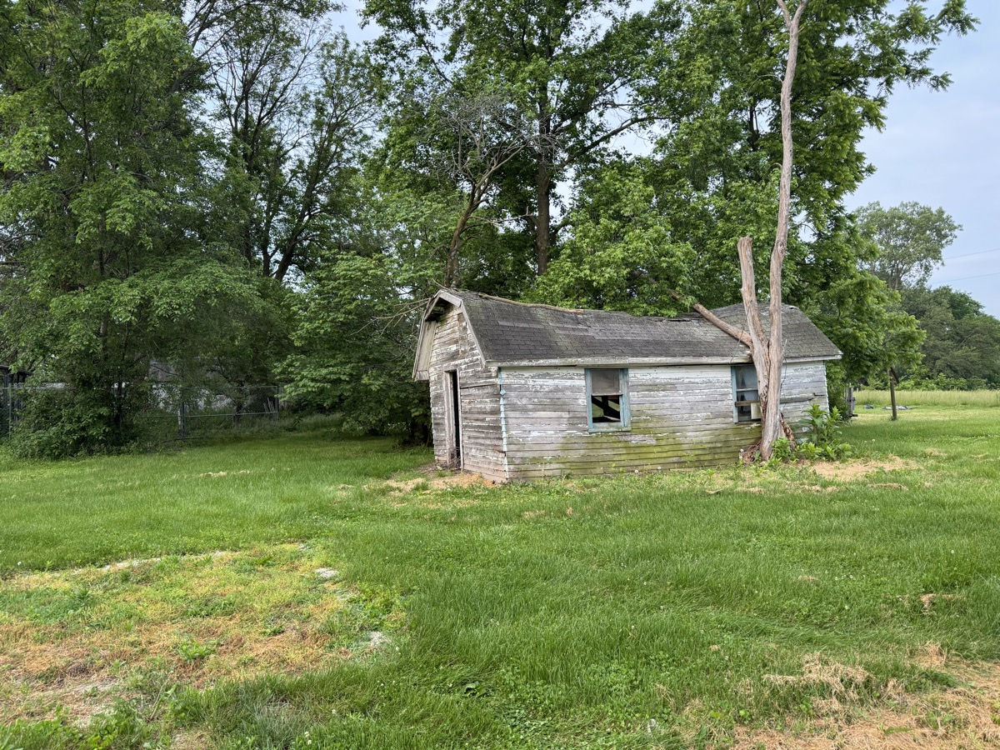

If you're a general contractor or developer running a project in Columbia, MO and you need a commercial demolition contractor who actually answers the phone, shows up when they say they will, and hands you back a clean site, this guide is for you.
I'm Chris Kurtz, owner of Atlas Excavation & Demolition. We sub commercial demolition work for GCs across Boone County and Mid-Missouri every week. This post is the straight version of how that relationship works, what it costs, what gets pulled at permit, and what to look for before you sign anyone up.
Quick Answer: A commercial demolition contractor in Columbia, MO typically charges $4 to $8 per square foot for light commercial teardowns and gut work, and most jobs under 10,000 square feet wrap in 3 to 7 working days once permits are in hand. Columbia requires a 30-day Intent to Demolish notice on commercial structures, so the permit window is usually the longer pole. Atlas Excavation & Demolition serves GCs and property owners across Mid-Missouri at (573) 234-6641.
In This Guide:
What Counts as Commercial Demolition in Mid-Missouri
Not every project needs a heavy industrial wrecking outfit. Most of the commercial demo work in the Columbia area is light commercial. That means:
- Single-story retail and restaurant teardowns
- Small office buildings and standalone commercial pads
- Strip center end-cap removals
- Tenant white-box prep and full gut renovations
- Detached commercial outbuildings, sheds, and accessory structures
- Selective interior demolition for buildouts
If you're tearing down a multistory warehouse or a heavy industrial site with deep utility cutbacks, that's a different conversation and a different size of crew. Atlas runs light commercial. We're a fit for the project sizes most GCs in Mid-Missouri actually deal with: under 15,000 square feet, single-story or low-rise, and projects where the GC wants one phone call to handle demo, debris, and rough grading at the slab.
What Atlas Handles on a Commercial Demolition Project
When you bring on Atlas as your commercial demolition contractor in Columbia, MO, here's the typical scope we run:
| Scope Item | Details |
|---|---|
| Site protection | Fencing, signage, and dust control before we start |
| Utility coordination | Disconnect verification with the utility before we cut |
| Structural teardown | Roof, walls, and floor systems removed in sequence |
| Interior demolition | Selective tearout, gut renovations, white-box prep |
| Concrete removal | Slabs, footings, and exterior pads |
| Debris hauling | All material loaded and disposed at licensed facilities |
| Permit coordination | City of Columbia demolition permit and DNR notification |
| Hazmat coordination | Asbestos and lead abatement subs scheduled before demo |
| Rough grade | Site left flat and walkable when we leave |
The handoff matters. When we finish, your concrete sub or framer can mobilize the next morning. That's the whole point of a clean demo: not just the building's gone, but the site is ready for the next trade without you having to send anyone back to fix what we missed.
Commercial Demolition Cost Per Square Foot in Columbia, MO
The honest range for light commercial demolition in Mid-Missouri is $4 to $8 per square foot for the demo and haul-away. That puts most projects in this neighborhood:
- 2,500 sq ft retail or restaurant: $10,000 to $20,000
- 5,000 sq ft strip-center pad or small office: $20,000 to $40,000
- 10,000 sq ft single-story commercial: $40,000 to $80,000
- Tenant gut renovation, 5,000 sq ft: $10,000 to $25,000 (selective is slower per square foot)
What pushes the number up:
- Asbestos or lead. If abatement is needed before demo, add $2 to $3 per square foot plus the schedule hit. Buildings built before 1980 almost always need a survey first.
- Concrete volume. Heavy slab and footing tonnage costs more to haul. A pole barn over a slab is cheaper to demo than the same footprint in masonry.
- Access. Tight downtown lots, shared driveways, or buildings that share a wall with the next tenant slow the work down and mean smaller equipment.
- Disposal distance. Mid-Missouri jobs that have to haul to a specialized C&D landfill cost more in trucking than jobs near a closer disposal site.
- Schedule pressure. If you need it done in 4 days instead of 7, that means more crew on site and a higher daily burn.
For a real number, we walk the building, measure, look at the materials, and write a flat price. No allowances. No hidden line items. Drop us the address and the project specs and we turn it around fast.
Need a Commercial Demo Sub for a Mid-Missouri Project?
We work directly with GCs, developers, and property owners across Columbia, Boonville, Fulton, and the rest of Mid-Missouri. Send us the project specs.
Timeline: How Long a Commercial Demolition Job Actually Takes
The on-site demolition is rarely the long pole. Permits and the 30-day notice in Columbia almost always are. Here's the realistic timeline for a 5,000 sq ft commercial teardown in Boone County:
- Day 0: Site walkthrough, measurements, written scope and price.
- Days 1 to 5: Asbestos survey if the building is pre-1980. Results back in roughly a week.
- Day 5: File Intent to Demolish with the City of Columbia. The clock starts on the 30-day notice.
- Days 5 to 15: Asbestos abatement scheduled if needed (typically 3 to 7 days on site).
- Day 35: Demolition permit issued.
- Days 36 to 42: Demolition on site, debris hauled, slab broken if specified, rough grade.
- Day 43: Final walkthrough with the GC. Site signed off.
That's about a 6-week start-to-finish window for a typical mid-sized commercial demo in Columbia. Larger projects, full asbestos abatement, or additional historic preservation review can stretch it. Smaller jobs without abatement can compress to 4 weeks. If you're a GC sequencing trades for a development, the smart move is to file the Intent to Demolish the day you award the demo contract. Don't wait.
Permits and Regulatory Steps for Commercial Demolition in Columbia
Columbia, MO has a clear permit process for commercial demolition. The big pieces:
Intent to Demolish (30-day notice)
Before the City will issue a demolition permit on a commercial structure, you have to file an Intent to Demolish at least 30 calendar days in advance. The window exists so the public and the historic preservation commission have time to weigh in. For most modern commercial buildings this isn't a real friction, but it is a calendar item you can't shortcut.
Demolition Permit Application
Applications go through the City of Columbia Building and Site Development Division at 701 East Broadway. The application asks for proof of utility disconnect, the planned disposal site, and the contractor's information. We pull permits in our name on most jobs to keep this off the GC's plate, but we can also pull under your number if your insurance department prefers it.
Asbestos and Hazmat Notification
The Missouri Department of Natural Resources requires 10 working days' notice before demolition or renovation work on commercial buildings where regulated materials may be present. For pre-1980 buildings, plan on a survey before the notice. We coordinate the certified abatement contractor and keep both notifications synced with the demo permit so nothing waits on nothing.
Historic Preservation Review
If the building is 50 years or older, the Historic Preservation Commission can request a walkthrough and inventory of salvageable materials at no cost during the 10-day public comment period. This rarely blocks a project, but it can add a week or two if the commission asks for documentation. We've been through this on multiple downtown projects and know how to move it forward without losing the build slot.
Heads up for GCs: The Intent to Demolish notice in Columbia runs 30 calendar days, not 30 working days. If you're sequencing a demo around a build season or a tenant lease, file the notice the day you award the contract, even if you're not 100% locked on the start date. You can pull the notice if plans change. You can't reverse a 30-day delay.
How to Vet a Commercial Demolition Contractor Before You Sign Anything
If you're a GC bringing on a commercial demolition contractor in Columbia, MO for the first time, the vetting is the same as for any sub on a job that affects schedule and liability. Five questions cover most of it:
- Are you licensed and insured for commercial work, and can I get a current COI? The answer should be yes, today, with named additional insureds when your contract requires it.
- Will you pull the demolition permit, or do you want me to? Either is fine. The wrong answer is a blank stare.
- Who's actually doing the work? Your crew or a sub? Some local outfits broker demo to a sub-sub. Atlas runs our own crew and equipment. If a contractor can't tell you whose hands are on the job, that's a flag.
- What's the schedule, in writing, including permit windows? If they won't put a written timeline next to the price, you don't have a real schedule.
- How do you handle asbestos coordination? "We don't deal with that" is not the right answer on any building older than the early 1980s.
For a deeper version of this list, see our piece on how to choose a demolition contractor in Mid-Missouri.
Why GCs in Mid-Missouri Use Atlas as a Commercial Demolition Sub
I'm not going to say we're the best in the state. I'll say what's true:
- We answer the phone. The single biggest complaint GCs in Mid-Missouri have about local subs is that calls don't get returned. We pick up or call back the same day.
- We give written scope and a flat price. No allowances on demo. The number we give is the number you bid into your project.
- We carry our own insurance and run our own crew. We're not brokering your job to someone you've never met.
- We handle the permit and DNR notification. One less line item on your PM's desk.
- We leave the site clean. Debris hauled, slab broken if you want it broken, rough grade in. Your concrete sub mobilizes the next day.
- We're local. We're 15 minutes from most Boone County job sites and an hour from the edges of Mid-Missouri. We can get to a walkthrough this week.
We've subbed demo on retail teardowns, office gut renovations, restaurant buildouts, and small commercial pads across Columbia, Boonville, Fulton, Centralia, Jefferson City, and Mexico, MO.
Have a Commercial Project? Send Us the Specs.
Atlas Excavation & Demolition handles commercial demolition for general contractors and developers across Columbia, MO and Mid-Missouri. Send us your project specs and we'll come walk the site and put a flat price in writing.
Subcontractor Inquiry Call (573) 234-6641Frequently Asked Questions
How much does commercial demolition cost per square foot in Columbia, MO?
Most light commercial demolition projects in the Columbia, MO area run $4 to $8 per square foot for the demo and haul-away. A 5,000 sq ft retail or restaurant teardown typically falls between $20,000 and $45,000 depending on materials, access, and disposal volume. Asbestos abatement, if needed, adds $2 to $3 per square foot. We give a flat written number after a site walkthrough so you can plug it into your bid with confidence.
Do I need a permit for commercial demolition in Columbia, Missouri?
Yes. The City of Columbia requires a demolition permit for commercial structures, and the Intent to Demolish must be filed 30 calendar days before the permit can be issued. The city also runs a 10-day public comment window for historic preservation review. We pull the permit, file the asbestos notification with Missouri DNR if needed, and coordinate with the Building and Site Development Division so your project schedule isn't held up at the front end.
How long does a commercial demolition job take?
Once permits are in hand, most light commercial teardowns under 10,000 square feet take 3 to 7 working days on site. Permitting and the 30-day Intent to Demolish notice period in Columbia is usually the longer pole. Asbestos abatement, if required, adds another week. We give you a written timeline before we start so you can sequence your other trades around our finish date.
Will you work as a subcontractor on a GC's project?
Yes, that's a big part of what we do. We sub demolition work for general contractors on commercial buildouts, gut renovations, and full teardowns across Mid-Missouri. We carry our own insurance, run our own crew and equipment, pull our own permits when the GC asks us to, and stick to the schedule. Send us the project specs and we'll turn around a written scope and price.
Are you licensed and insured for commercial work in Mid-Missouri?
Yes. Atlas Excavation & Demolition is fully licensed and insured for residential and light commercial demolition across Boone, Callaway, Cole, Audrain, Howard, Cooper, and Moniteau counties. We provide certificates of insurance directly to your insurance department or risk manager when you bring us on a project.
Get a Quote for a Commercial Demolition Project
If you're a GC, developer, or property owner with a commercial teardown or gut renovation in Columbia or anywhere in Mid-Missouri, we'd be glad to walk the site and put a number in front of you.
- Phone: (573) 234-6641
- Email: hello@deployatlas.com
- Online: Subcontractor and project inquiries
For more on related services, see our pages on demolition services in Columbia, MO and interior demolition for contractors.